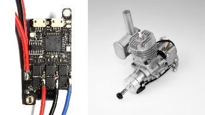

ESCs and Motors¶
ArduPilot supports a wide variety of ESCs, motors, and Electronic Fuel systems. The pages below provide setup instructions for the most popular types
Motors¶
- [site wiki=”copter,rover”]
Brushed motors and ESCs <common-brushed-motors>
[/site] [site wiki=”copter”]
Booster motor <booster-motor>
[/site] [site wiki=”plane”]
ICE (Internal Combustion Engines) <common-ice>
[/site] [site wiki=”rover”]
Thrusters (for boats) <thrusters> Torqeedo Electric Motor (for boats) <common-torqeedo> Trolling motors <trolling-motor>
[/site]
ESC for Brushless Motors¶
ESCs (Electronic Speed Controls) have many different protocols for communicating with the autopilot for motor speed control, and and can also provide telemetry information on motor rpm, battery voltage. The capabilities will vary with each individual ESC model. Some ESCs have specialized firmware that allows easy configuration of operating parameters. The following sections explain the required ArduPilot setup to utilize the protocols, telemetry, and setup programs that various ESCs utilize. See ESC (Electronic Speed Controls) for a guide to terminology.
Protocols¶
ESCs using BLHeli32 or BLHeli-S Configuration Firmware¶
Telemetry¶
Note
Currently ArduPilot only supports telemetry on BLHeli or DroneCAN/CAN ESCs, not throttle signal wire reported telemetry that some single unit ESCs report.
[site wiki=”plane”]
Electronic Fuel Injectors (EFI)¶
[/site] ESC wiring and Large QuadPlane ESC Issues =========================================